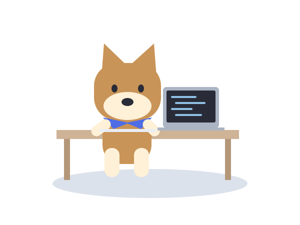

선수 관절 + 실제 공 검출 좌표와 궤적

박지우 AI / ML Developer
AI를 실제로 쓰이는
기능으로 만듭니다.

작은 작업실에서.
안녕하세요, 박지우입니다.동작하는 이유까지,
동작하는 이유까지,
이해하며 만듭니다.
컴퓨터 비전과 3D 동작 분석을 연구하는 AIV Lab 학부연구생 박지우입니다. 영상 속 움직임을 데이터로 해석하고, AI를 실제로 쓸 수 있는 기능으로 만드는 데 관심이 있습니다.
코드가 왜 이렇게 동작하는지, 이 문제에 왜 이 설계가 필요한지 생각하며 개발합니다. 예상과 다른 결과가 나오면 입력 데이터와 처리 과정을 나눠 살펴보고, 실험과 로그로 원인을 확인합니다.
컴퓨터 비전·의료 AI 연구와 축제 서비스 개발을 거치며, 연구에서는 결과의 근거를, 서비스에서는 사용자가 겪을 상황을 살피는 법을 배웠습니다. 선택한 방법을 설명할 수 있고, 팀과 함께 더 나은 답을 찾아가는 AI 엔지니어가 되고자 합니다.
제가 만든 것들Selected work
직접 만들고, 실험하고, 운영했습니다.
공개 농구 영상 → CoMotion → SMPL 메쉬

 실제 예매·사전 등록 안내 화면
실제 예매·사전 등록 안내 화면Backend · 실제 서비스 운영
단짠 / Danzzan
총학생회·네이버와 함께 만든 축제 서비스. 예매부터 현장까지.
담당Redis·Lua 예매 처리 · 인증·번역
- 실사용자
- 6,000+
- 티켓팅 동시접속
- ≈ 4,000
+ Conquer HealthHealthBench
Better answers.
Measured.
Measured.
46.17라운드 1
45.55라운드 2
47.82라운드 3
Lunit L2-preview팀 최종 평가 기록
LLM 시스템 · 해커톤
Conquer Health
루닛 · 벤치마크 1위 · AIM 팀 수상직접 생성과 선택적 근거 조회를 검증한 의료 대화 해커톤.
담당MCP 조회·본문 전달 · 출력 예산 실험
다른 프로젝트
호기심이 이어진 곳들.
 개체별 증상 분류 결과 화면
개체별 증상 분류 결과 화면공격 전후와 방어 결과를 비교하는 실제 시연
입력과 단계별 분석 결과의 실제 시연
자격 및 교육
자격 취득과 교육 수료 이력.
함께 풀어볼 문제가 있나요?Park Jiwoo